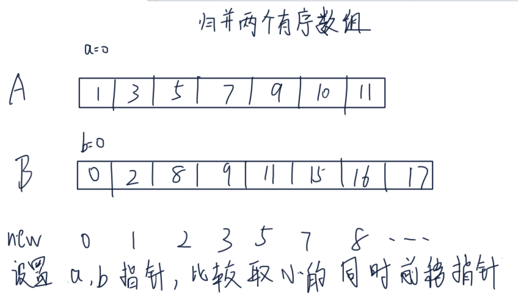
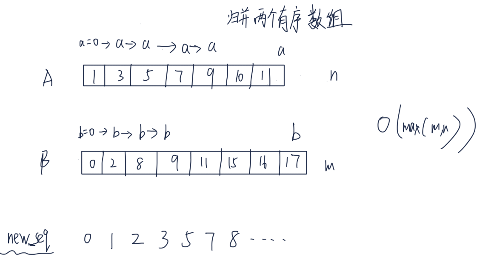
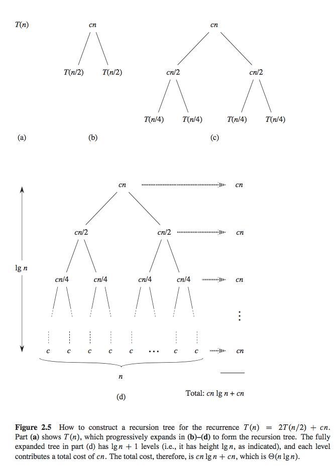

分治法 (Divide and Conquer)¶
很多有用的算法结构上是递归的，为了解决一个特定问题，算法一次或者多次递归调用其自身以解决若干子问题。 这些算法典型地遵循分治法的思想：将原问题分解为几个规模较小但是类似于原问题的子问题，递归求解这些子问题， 然后再合并这些问题的解来建立原问题的解。
分治法在每层递归时有三个步骤：
- 分解原问题为若干子问题，这些子问题是原问题的规模最小的实例
- 解决这些子问题，递归地求解这些子问题。当子问题的规模足够小，就可以直接求解
- 合并这些子问题的解成原问题的解
归并排序¶
现在我们就来看下归并排序是是如何利用分治法解决问题的。
- 分解：将待排序的 n 个元素分成各包含 n/2 个元素的子序列
- 解决：使用归并排序递归排序两个子序列
- 合并：合并两个已经排序的子序列以产生已排序的答案
考虑我们排序这个数组：[10,23,51,18,4,31,13,5] ，我们递归地将数组进行分解

当数组被完全分隔成只有单个元素的数组时，我们需要把它们合并回去，每次两两合并成一个有序的序列。

用递归代码来描述这个问题：
1 2 3 4 5 6 7 8 9 10 11 | def merge_sort(seq): if len(seq) <= 1: # 只有一个元素是递归出口 return seq else: mid = int(len(seq)/2) left_half = merge_sort(seq[:mid]) right_half = merge_sort(seq[mid:]) # 合并两个有序的数组 new_seq = merge_sorted_list(left_half, right_half) return new_seq |
注意我们这里有一个函数没实现，就是如何合并两个有序数组 merge_sorted_list。其实你在纸上画一画， 合并两个有序数组并不难实现。


1 2 3 4 5 6 7 8 9 10 11 12 13 14 15 16 17 18 19 20 21 22 23 24 25 | def merge_sorted_list(sorted_a, sorted_b): """ 合并两个有序序列，返回一个新的有序序列 :param sorted_a: :param sorted_b: """ length_a, length_b = len(sorted_a), len(sorted_b) a = b = 0 new_sorted_seq = list() while a < length_a and b < length_b: if sorted_a[a] < sorted_b[b]: new_sorted_seq.append(sorted_a[a]) a += 1 else: new_sorted_seq.append(sorted_b[b]) b += 1 # 最后别忘记把多余的都放到有序数组里 if a < length_a: new_sorted_seq.extend(sorted_a[a:]) else: new_sorted_seq.extend(sorted_b[b:]) return new_sorted_seq |
这样就实现了归并排序，并且你会发现它返回一个新的数组而不是修改原有数组。
时间复杂度¶
我们来简单看下它归并排序的时间复杂度，假设排序 n 个数字时间复杂度是 T(n)，这里为了方便假设 n 是 2 的幂
\begin{align}
T(n)= \begin{cases} c, & \text {if $n$ = 1} \\ 2T(n/2)+cn, & \text{if $n$ > 1} \end{cases}
\end{align}

总的代价是 cnlg(n)+cn ，忽略常数项可以认为是 O(nlg(n))。如果这个图看不懂，我们自己求解下也不难，首先我们简化一下， 把常数系数当成 1，得到以下递归式：
\begin{align}
T(n)= \begin{cases} 1, & \text {if $n$ = 1} \\ 2T(n/2)+n, & \text{if $n$ > 1} \end{cases}
\end{align}

思考题¶
- 请你完成归并排序的单元测试
- 这里实现的归并排序是 inplace 的吗？
- 归并排序是稳定的吗？稳定指的是排序前后相同大小的数字依然保持相对顺序。
延伸阅读¶
- 《算法导论》第 2 章和第 4 章，你需要了解下『主定理』，以及如何求解形如 T(n)=aT(n/b) + f(n) 的递归式复杂度
- 了解算法导论上递归式的三种求解方法：代入法，递归树法，主方法